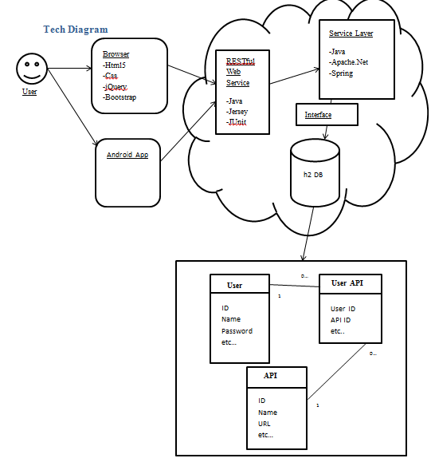

Week 5-7
Oct 26th - Nov 01st
A lot of changes this week to talk about. Decided to scrap the archetype I'd been using so far for a different one. Too much hassle and not
enough gain. Also decided to drop jersey and instead go full spring MVC. You can do a lot of restfull stuff with spring so it wont
make that much difference client side but because I'll be using spring everywhere then it'll all click together a little more smoothly.
Like I said already, changed arechetypes and now I'm using
co.ntier:spring-mvc-archetype:1.0.2. It's a little out of date in terms of spring versions and stuff but it's not much work to
bring it to the present. Plus it's a lot nicer to work with since there's no random config files hidden around the place. And finally I also
need to bring in Jackson into the project for dealing with json stuff since spring ain't so good at that. Shouldn't be a problem though.
Week 5-7
Oct 12th - Oct 25th
Not much to report really. Everything that I had planned to do has happened basically. As planned I got the db working fine,
the connection isn't a problem and with spring it's really nice and simple to get stuff setup. So far I've got the db working,
the interface class and the class that talks to that one up and running. As well as a super basic controller for testing. Over the
next week I want to get a start on the jersey stuff and get rid of the controller class. Then I'll be able to test things from the client
side straight through to the db which should be nice. A lot of assingments though so not entierly sure how much I'll get done.
Week 4
Oct 5th - Oct 11th
Picking up where I left off last week I've decided on a decent archetype to start with.
Spring MVC 4 Quickstart Maven Archetype As the name suggests it's a spring mvc 4 archetype. Uses a few things I don't need, like
mongodb config stuff, but it has the same-ish structure that I want and it comes with spring integration out the box. Also got everything
I think I need up and running to get started on some actual coding. Using eclipse for all my coding mostly which feels strange coming
off visual studios but it's good none-the-less. Going into a two week sprint now where I hope to get a nice chunk of work out of the.
The plan is to create a simple temp db, connect to it and have all basic crud operations working smoothly. I don't really know what
stuff I'm going to be needing so I'm going with dummy stuff. The important part is to get the db connection working since that could
be a pain.
Week 3
Sep 28th - Oct 04th
Got a decent amount done this week, have sone wireframes done which helped clear up some functionality questions and got
the tech diagram done up too. Gonna start setting up my environment for next week. Need to get eclipse, set up Git, etc... etc...
Decided to use apache.net for the pinging part of the project. Because I'm using java I could go with java.net but the apache
version has a lot more to it which I think will be useful. If not then bugger. Also briefly looked into which server on my machine,
decided on apache tomcat because why not, also because it's good and I sorta know how it works which should save me some set up time.
Last but not least I also started looking into maven archetypes to use for my project, not sure which I'm going to go with yet, hard to
tell which are good without being able to try 'em out. More on that next week so stay tuned.

Week 2
Sep 21th - Sep 27th
First meeting with Colm this monday and talked over what exactly I have in mind for the project. No bad comments that I remember (so
they can't have been that important). There doesn't look like any obvious problems with the technologies I've picked. I have decided
to go with Java for the backend. Probably going to use spring as the framework for a lot of stuff but I also plan to use Jearsy to create
my restfull service that my frontend will talk with. The front end is gonna be the usual stuff, html5, css, javascript(jQuery) and probably
some bootstrap in there too. For next week I'm going to try and have some kind of tech diagram drawn up on paper just to help sort things
out in my head. Also gonna start on wireframes and think about the db design.
Week 1(-ish)
Sep 14th - Sep 20th
Project API HealthCheck is go. Started looking into exactly what I'll be doing for the project. Figuring out what technologies
I'll use and all that jazz. More than likely going the Java route so I need to set up my environment for that. Also looking into
possible frameworks to use and general structure for the project. Already decided to use h2 as the database. It's simple to use,
lightweight and does exactly what I need it to. (h2 Database Engine).
Also spoke to Colm about maybe having him as my supervisor for the project, it's all a bit up in the air since it's so early
on but provisionally he's down with it.
Welcome to the API HealthCheck Project
The API HealthCheck project aims to be a website and app that allows developers to easily check
if APIs that they use or might use are online or offline. This service will provide the ability to see
how often an API is up or down, how long it stays down, along with other data that may be pertinent.
The service will also allow developers to put their APIs onto a global list that is viewable by everyone.
This will allow developers who are searching for appropriate APIs to find reliable ones to use.
It will also give the possibility for users to link to APIs on the global list to use in the promotion of their services.